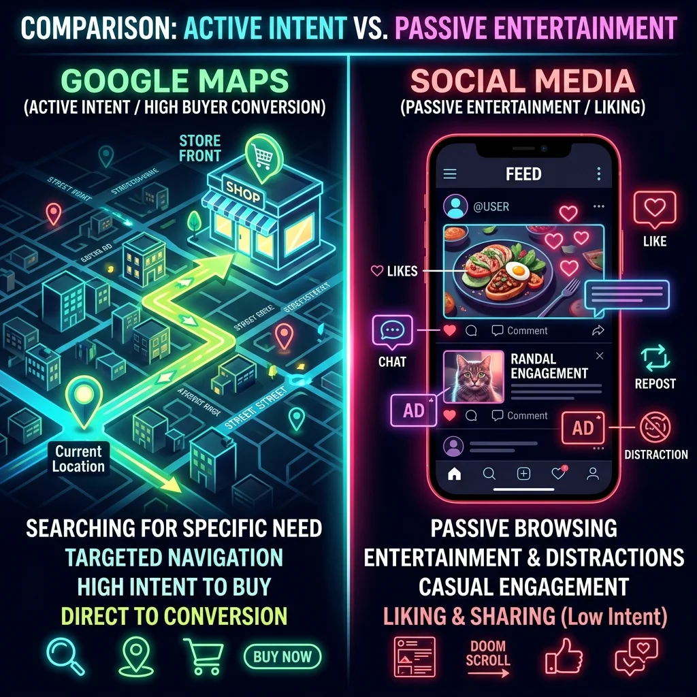

Existe una frase fundamental en el posicionamiento de PureteGO que resume el comportamiento de los consumidores en internet: **"En Google te buscan, en las Redes te distraes"**.
Cuando un negocio local en San Lorenzo o Asunción distribuye su presupuesto de marketing digital para 2026, suele surgir la duda: ¿debo gastar en anuncios de Instagram y Facebook, o enfocarme en posicionar mi negocio en Google Maps?
La diferencia no es solo de plataforma; es de **intención de compra**. Analizamos el ROI y la efectividad de ambos canales.
Demanda Activa vs. Atención Pasiva
Google Maps: Alta Intención y Conversión Directa
Nadie abre Google Maps en su celular para entretenerse o ver videos de humor. Lo abren porque **ya tomaron la decisión de comprar o contratar un servicio**. Si buscan "cerrajería 24 horas en Luque" o "clínica dental Asunción", el cliente tiene una necesidad urgente. Posicionarte en el TOP 3 de Maps te conecta con el comprador en su momento de conversión.
Redes Sociales: Entretenimiento y Descubrimiento Pasivo
El usuario en Meta, Instagram o TikTok busca pasar el tiempo libre. La publicidad interrumpe su navegación. Aunque sirve para posicionar marca (branding) y generar deseo a mediano plazo, el porcentaje de usuarios listos para comprar de inmediato es significativamente menor.
Comparativa de Métricas y ROI Local
En términos de rentabilidad para comercios físicos, oficinas corporativas y clínicas médicas en la Gran Asunción, las estadísticas de PureteGO (Dic 2025 - Ene 2026) demuestran que:
- Costo por Adquisición (CPA): El posicionamiento orgánico en Google Maps no consume presupuesto por clic, lo que reduce el CPA a una fracción en comparación con la pauta paga mensual en redes sociales.
- Llamadas Directas: Las fichas optimizadas en Google Maps reciben un promedio de 87% más de llamadas telefónicas de intención directa que los perfiles sociales equivalentes.
- Direcciones Viales: Google Maps genera indicaciones GPS guiadas (Waze/Maps) directo a la puerta de tu local físico.
El Veredicto Estratégico
Si tu presupuesto es limitado y necesitas facturar de inmediato, **prioriza la dominación local en Google Maps**. Una vez que captes la demanda activa de tu zona de influencia (Asunción, San Lorenzo, Lambaré, etc.), reinvierte las ganancias en campañas de redes sociales para capturar demanda pasiva.
¿Quieres triplicar tus llamadas de clientes locales listos para pagar?
Deja de acumular me gustas estériles y empieza a generar llamadas reales. En PureteGO te ayudamos a dominar Google Maps en Paraguay.
SOLICITAR CONSULTORÍA DE MAPS